IT'S BEEN A QUIET WEEK HEREin Durango, Colorado, my hometown. I'd like to tell you about the place. But first I must confess my bias. I love southwestern Colorado and hope to remain here the rest of my days.For that reason, and others perhaps less selfish, I'm protective of Durango's small-town ambience and La Plata County's natural beauty, the two qualities that make this such a special place to live-and the very qualities now being threatened by insidious change. I watched one small town I loved grow until it became a buzzing metropolis in which I no longer desired-or could afford-to live, and I'm in no hurry for the same thing to happen here.
In light of my antigrowth bias, it would be impossible for me to write a Pollyanna review of La Plata County that ignores or minimizes its growing pains. So, to help temper my tantrums, I've recruited the comments of nine other locals. While some of their views agree more or less with mine, others differ sharply. My caveat thus stated, let's have a look around.
LA PLATA COUNTY, COLORADO,comprises a dozen small towns, the three largest being Ignacio (pop. 667), headquarters of the Southern Ute Indian tribe; Bayfield (pop. 724), a quiet little ranching and bedroom community; and Durango, the county seat and a lively tourist town (pop. 12,600, plus nearly 4,000 college students, September through April).
Located in extreme southwestern Colorado, Durango (elevation 6,512 feet) got its start in 1880 when the Denver and Rio Grande Railroad began construction of a branch line up through the rugged San Juan Mountains to the high-country mining camp of Silverton, 50 miles to the north. From Silverton, more than $300 million in gold and silver ore was eventually freighted over the narrow-gauge rails to Durango, where it was smelted before being moved on down the line.
In its early days, Durango had all the color and action the gun-and-gallop movies have led us to expect from a true Old West town: cowboys, Indians, gamblers, gunfights, murders with prompt justice served up by legal (or at least popular) neck stretchings, saloons, brothels, even a high roller's "boulevard" of gingerbread Victorian homes (East Third Avenue, recently designated a national historic district).
Today, during the summer months, the original coal-burning, steam-driven, narrow-gauge train still rattles along the same tortuous route up through the San Juans to Silverton (pop. 794, elevation 9,318 feet) and back. But nowadays, the train is called the Durango and Silverton Narrow Gauge Railroad, and its cargo isn't ore but tourists, some 173,000 of them in 1988.
Thus, the railroad built Durango, and the railroad, through the tourists it attracts (mostly from Texas), helps keep the county green today. Even so, railroaders weren't the first people to occupy this verdant mountain valley, where the Animas River fights free of the granite walls and towering peaks-several jutting above 14,000 feet-of the San Juan Range. The beauty of this place has attracted people since-when? The earliest known residents, dating nearly 2,000 years ago, were the Basket Maker Anasazi, ancestors of today's Pueblo Indians. Next came the Utes and, a little later and a ways south and west, the Navajo.
LA PLATA POSTCARDS: Upper left: The Needle Range of the San Juan Mountains. Upper right: Engine No. 481 returns from Silverton. Far left: Roadside scenery between Bayfield and Durango. Left: The Southern Ute Bear Dance is a popular local event.
We still have the Indians (the Southern Ute Reservation occupies approximately the bottom third of the county), plus a venerable Hispanic community and a passel of distinctly non-urban cowboys. Add merchants, tourists and outdoor sports (a recent issue of Outside magazine, in an assessment awash in hyperbole, ranked Durango eleventh among their pick of the top 15 outdoor "sporting towns" nationwide); a four-year liberal arts college, with its 4,200 students and staff; more realtors, land developers, oil- and gas-drilling companies, and their lawyers, than you can shake a monkey wrench at; a creative core of professional artists, photographers and writers; a dribble of crystal-gazing New Agers and a dabble of salon-tanned yuppies-and you have some idea of the cultural and philosophical diversity of La Plata County, Colorado, in 1989.
Kayaking the Animas right through Durango is popular.
Durango itself has 20 city parks and playgrounds, a modest in-town ski area, 2,832 hotel and motel rooms, two hospitals, 75 doctors, 25 dentists, 40 churches and a similar profusion of drinking establishments, an 18-hole golf course, a hot springs, an almost-daily newspaper and several broadcasting stations, including a public-radio affiliate.
Within a 20- to 40-mile radius of Durango you can tour a unique national park (Mesa Verde with its cliff-hanging Anasazi dwellings), explore a huge national forest (the San Juan), hike a designated wilderness area (the Weminuche), wait in lift lines at a world-class alpine ski resort (Purgatory), boat and fish dozens of clear-water lakes and streams, observe a blessing of wildlife and breathe some of the cleanest air in the Lower Forty-Eight.
Of all these things and more, we brag loudly. We're less boastful, however, of the 2.3-million-cubic-yard mountain of radioactive mill tailings presently being evicted from its longtime home at the edge of town, where it has radiated embarrassment for decades, and trucked to a "containment cell" located on state wildlife lands in nearby Bodo Canyon.
Also relatively unsung are the facts that our winters are tediously long and white, with an annual average snowfall in Durango of 74.8 inches, a figure which increases significantly with altitude (my place at 8,000 feet, 13 miles northeast of town, gets 190.3 inches); that Durango's summer traffic is frenetic, and downtown public parking is painfully tight; that rental housing is in short supply, and g ood jobs are scarce as fur on a trout; that because Durango is a tourist town, the local pay scale is low; that because Durango is a tourist town, the cost of living is high; that the number of homeless and street people is growing; that the soil is generally poor; that reliable water can lie deep (my well is down 278 feet for a piddling five gallons per minute), and drilling permits can be hard to come by; or that the county is already pocked .with 1,730 gas wells, with drifters racing helter-skelter to sink hundreds, perhaps thousands, more before they're finished.
Because Durango is a tourist town, the pay scale is low; the cost of living, high.
Scenic beauty and environmental purity, both threatened by development; a poor job market and high cost of living; an increasingly divisive growth-versus-preservation argument-these are among the subjects you're likely to hear locals debating over coffee at Carver's Bakery, the Durango Diner and other favored breakfast stops around the county. And these are the primary themes that nine fellow locals, observing and commenting from as many different perspectives, will speak to now.
KENNETH G. BRENGLE, JR., 34,is chief executive officer of the Durango Area Chamber Resort Association, known local ly as DACRA. Brengle is a Colorado native, has a political science degree from Fort Lewis College and has lived in La Plata County, off and on, for about nine years.
"DACRA," Brengle explains, "is a consolidation of the Durango Chamber of Commerce and the Durango Tourism Board. As a representative of the business community-and that's who DACRA represents-we want to see positive, steady growth in the area. Our Retirement Real Estate Council is trying to bring in second-home buyers and retirees, people with higher incomes. On other fronts, we're attempting to strengthen the existing business structure and take the lead in areas such as land-use planning.
"Durango has a tourism-driven economy, and that's a very clean industry. People come here and they leave, and basically what they leave is money. But one thing about a tourism-based economy is that it does not provide high-paying jobs. All of us in the business community realize that we need to start planning and working toward quality growth. I believe that you have to have growth or you're going to die."
Out in the ranching country around Bayfield, growth may in fact mean the death of the traditionally bucolic lifestyle, with the gas-drilling binge there causing distress for rural residents and county commissioners alike. Part of the rub arises from the separation of property ownership and mineral rights. Since the law of the land allows the owner of subsurface minerals to come in and extract that wealth even over the protest of the surface property owner-and since few rural residents these days, anywhere, own the minerals below their land-more and more rural La Plata countians are waking up to find new roads slashed across their pastures, new drilling rigs or wastewater injection wells chugging away virtually in their yards. Commenting on the latter, the Durango Herald recently noted: "Over the next 20 years, 1 billion barrels of salty gaswell wastewater . . . could be pumped beneath the ground in La Plata County .... Of utmost concern is the potential for contamination of drinking-water wells and aquifers." In some areas, methane seepage has already tainted the subsurface water supply.
Some locals feel that we're running our national forests like hot dog stands.
The majority of the drilling, however, is being done not on private but on national forest and Bureau of Land Management (BLM) lands that abut, and "patch" between, private parcels. This is the problem faced by the Fitzgerald family.
Jim Fitzgerald, his wife, Terry, and their two daughters live on a 360-acre spread a few miles east of Bayfield, hard against a spur range of the San Juans called the HD Mountains. In addition to raising and working Belgian draft horses, Jim is a professor at Fort Lewis College. The Fitzgerald home, built by a logger in 1914, has no telephone and no electricity. They like it that way. For 19 years it has been a rustic paradise. Now all of that is changing.
"The HD Mountains of southeastern La Plata County," Jim explains, "include about 45,000 acres of national forestlands, most of them wooded with ponderosa and pinon pine, blue spruce, aspen and Gambel oak. In those woods live deer, elk, bears, mountain lions, wild turkeys, coyotes and a great many species of smaller mammals and birds. Hundreds of unexcavated archaeological sites from the Anasazi culture of a thousand years ago dot the landscape.
"Our land sits at the foot of the HDs, and their beauty enchants us. Yesterday, my daughter Gretchen voiced what my wife and I have been thinking for some time now. `Imagine,' she said, `what this land will look like with gas wells and roads all over it.' Indeed, imagine: drilling rigs, pipelines, wastewater injection wells, new roads with trucks rumbling by all day long. And each new road will spawn five new trails for off-road vehicles and looters of archeological sites. One more quiet and beautiful place will have been lost to the uncaring forces of the marketplace.
"Amoco Production Company has already drilled 21 wells in the HDs; their goal is 140. Under public pressure, the Forest Service is conducting an environmental impact study, but its outcome, given that outfit's miserable track record, can be predicted to condone continued drilling.
"What is happening here in the HDs-to the land, to the wildlife, to the people, to the historical integrity of the area-is symptomatic of what's happening everywhere. The economic system that has led to America's national forests being run like a hot dog stand has been around for a long time. We need to create a new system, a system that will allow us to live in and with nature without destroying it. There's no reason why places where humans live can't also be places of beauty and enchantment."
Another major growth-versus-preservation question getting bounced around a lot these days in La Plata County (as well as in D.C.) is the Animas-La Plata Project. A-LP is a reservoir proposed to be constructed above the Animas River just south of Durango. According to the plan, a pumping station would suck huge quantities of water from the Animas River and muscle it up and over the bordering hills to the reservoir site. Should this on-again, off-again project go through, it is predicted to inject as much as $400 million into the local economy over the several years it will take to complete.
While business boosters view A-LP as an economic windfall, others consider it a pork barrel fiasco that would bring serious negative change to the social structure of the county (primarily, by introducing a large number of transient workers), dry up the lucrative local river-rafting industry and erode the riverine ecology below the pumping station. One of those speaking out against A-LP is artist Stanton Englehart.
Stanton was born locally and has lived in the area 56 of his 58 years. A visionary painter of interpretive Southwestern landscapes, Englehart is also an environmentalist, a philosopher, a teacher, a long-haul road bicyclist and a preeminent fly-fisherman. He spoke with me while standing waist-deep in cold mountain water, working a long arc of fly line above one of his favorite riffles on the Animas.
We have great scenery . . . and recreational variety-but you can't live on those things alone.
"The reason I've remained in southwestern Colorado all my life," he began, "is that it puts me on the edge of four different environments. Two hours north and I'm high in the San Juans, as beautiful a range of mountains as exists anywhere. Two hours west and I'm on the edge of Monument Valley and the canyon country of southeastern Utah. And separating these two ecosystems is a transitional zone of pastoral farmland. South two hours, into New Mexico beyond Farmington and Shiprock, and I'm out in a desert area with blowing sand and tumbleweeds, rattlesnakes, real heat, big distances. Finally, two hours east and I'm traveling along the foothills of the mountains-from Bayfield to Pagosa Springs and on east-big cattle ranches and excellent wintering range for elk and deer.
"The biggest threat I see to all of this glorious natural diversity is the relentless push for growth. I just don't think that any of the southwestern Colorado counties have ever had anywhere near the kind of planning that's necessary to deal with the remarkable filling up with people I've observed in my half century and more here. I would like to see a lot more-and better-resource planning, more open land, clustering of development, less construction on scenic hillsides, building along the edges of valleys rather than ripping right through their hearts.
"But instead of well-planned growth, I see houses strung out helter-skelter, roads scarring once-pristine hillsides. I see power lines strung along ridges where they clutter the view and reduce the scale of the landscape. I see virtually no concern for aesthetics anywhere. I'm not very optimistic. Most of the change I've seen here in the past 20 years or so has not been positive. The Animas-La Plata Project would be a continuation of this trend.
LA PLATA COUNTY FACTS
Area
Colorado 103,595 sq. mi.
La Plata Co. 1,692 sq. mi.
Population
Colorado 3,178,000 (1984)
La Plata Co. 30,373 (1988)
Density
Colorado 30.7 per sq. mi
La Plata Co. 17.95 per sq. mi.
Economy
Colorado 1. government, 2. services, 3. wholesale and retail trade
La Plata Co. 1. services, 2. retail trade, 3. government
Per Capita Income
Colorado $13,847 (1984)
La Plata Co. $9,398 (1985)
Expenses
Colorado Taxes: 3% sales tax; 27.14 1 cents per gallon gasoline tax; 3 to 8% personal income tax
La Plata Co. Taxes: residential property tax per $1,000 assessed property value, $41 to $97, depending on municipality; 2% sales tax; 2% municipal (city of Durango) tax; 1.9% lodger's tax. Median house value (1988): $79,937; median rental: $475.
Unemployment
(February 1989)
Colorado 7.4%
La Plata Co. 8.6%
Education
La Plata Co. 7 elementary, 2 junior high, 1 senior high schools; 5 private schools; 1 four-year college. Avg. public schoolteacher's salary (1989): $28,386. Student-teacher ratio: 21:1; attendance rate: 96%; dropout rate: 6.1%.
Climate
Colorado Avg. precipitation: 17" per year. Growing season: 0 to 180 days, depending on altitude. Avg. daily temperature: January, 24°F;July, 67.7°F. La Plata Co. Avg. precipitation: (Durango) 18.61" per year. Avg. snowfall: Durango (6,512'), 74.8' ; Lemon Dam (8,090'), 190.3' ; Purgatory Ski Area (midway, 10,200'), 300". Growing season: 108 days. Avg. daily temperature: (Durango)January,25.7°F; July, 67.4°F. Avg. annual days below 0°F: (Durango) 11.
"If A-LP goes through, the river below the pump station will be reduced to a constant low level, creating something akin to a big irrigation ditch. The state fisheries people say that A-LP won't hurt the fishing. But based on a great many years spent studying this river, I disagree. The Animas is so wide, so shallow, that with a reduced water flow, I believe it will warm to the point of significantly reducing fish production. And even if I'm wrong about this, we'll still have lost the beautiful pattern of seasonal changes associated with a free-flowing river. I just don't think A-LP is the best solution to water use in this region."
The concerned observer is led to wonder: What effects might significant population growth-from A-LP, DACRA's ongoing "Come on in, the water's fine!" campaign or any other cause-have on law and order hereabouts?
Bill Gardner's election nearly three years ago as sheriff of La Plata County brought a fresh and welcome breeze to a long-stale office. Bill, 40, has been a resident of La Plata County for 10 years. He and his wife have three children. In addition to the crimes the sheriff enumerates, in 1988-an uncommonly violent year everywhere, it seems-La Plata County also saw a kidnapping and three murders, two of which remain unsolved.
"My vision of the role of a rural sheriffs department," says Gardner, "is to be an integral part of the community-a law enforcement cliché, perhaps, but nonetheless something I believe in-and to help the community maintain its quality of life. My deputies and I try to embody the concept of true peace officers who both reside in and reflect the values of our community.
"As a small, rural county, La Plata enjoys a far lower crime rate than the majority of urban and suburban areas I'm familiar with. This is a fine, safe place to live. But it requires nurturing and constant vigilance to keep it that way. We still have the tragedies of domestic violence, sexual assault, bur glary, narcotics-you know, this is the United States in the late 1980s. Any growth or sudden change in this county will be something I'll be very concerned about in terms of protecting the lifestyle we now enjoy."
The Thies family numbers six: Jason (Jay), 37; Christie, 34; their children, Ben, Jennie and Karen; plus Zeb, the fat dog. Jay is maintenance supervisor for a sprawling vacation-home subdivision near Bayfield. Chris works at a carpet store in Durango. Both have degrees in psychology. During a recent evening of fireside conversation the Thieses offered the following observations on their views of the quality of life in La Plata County today.
(Jay) "When we first arrived in Durango, in July of '78, rental housing was totally unavailable, so Chris and I had to stay with friends-four of us stuffed into a one-bedroom cabin. Eventually, I landed a caretaker job that included housing. We worked and saved, and finally, three years ago, were able to buy a home.
"Having once been a caretaker for a wilderness preserve, I have mixed feelings about my present job, working for a land developer. But then, having left our home in central Illinois because times were so hard, I've seen the other side of it; where there's not enough activity in the economy you have high unemployment, welfare and lots of people with bad attitudes. So I feel that a certain amount of development is good."
(Chris) "We need a second income, so I'm working full-time now. But after day care, food and transportation, there's not much left of my paycheck. We often wonder if we wouldn't be able to provide better for ourselves and our kids if we lived in or near a bigger city."
(Jay) "But we've lived in La Plata County for 11 years now; it's hard to think about leaving."
(Chris) "This is such beautiful country, and such a great place to raise children. Growing up in an environment like this, I think kids develop a sense of wonderment, learn to appreciate nature and other things that might get overlooked in a more populated place. We can step out our door and go for a walk in the woods. Even commuting to work every day-it's a beautiful road. And the schools are good. We try to appreciate those things; that's why we've been willing to sacrifice so much in order to live here.
"Still, living on the financial edge, year after year, gets to be a real grind. We've seen a lot of people come and go. The beauty draws them in, then, a year or so later, their savings and energy drained, the economy forces them back out. They just get tired of the struggle. You can't be materialistic and make it here." Just so. Yet a few relatively good jobs do exist locally. Among the most coveted of these are the 400 or so state-salaried faculty, administration and staff positions at Fort Lewis College.
Leonard "Red" Bird, 53, is professor of literature and creative writing and chairman of the English department at Fort Lewis. He is also, to my critical ear, a poet of exceptional depth and talent. Red and his wife, Jane, live on a small ranch near Hesperus, in westcentral La Plata County, where Red spends his summers pursuing the Zen of irrigation ditching.
"I've been at Fort Lewis for 20 years," says the good professor, "and consider it to be my school; it is a unique place. As a relatively small, state-supported liberal arts college [1988 enrollment was just over 3,800], we try to give a lot of individual attention to our students and to provide them with a strong background in the liberal arts. Considering what the school can pay its teachers, Fort Lewis has an exceptionally strong faculty [of 160 full-time professors, 85% hold terminal degrees], and the curricula in a number of departments is outstanding.
"Because of our spectacular physical surroundings, we tend to draw a lot of students who are relatively independent, outdoor oriented and interested in the life of both the mind and the body. While we do get a lot of young people who are here primarily to play, we also attract students who enhance the caliber of the school-good students who thrive in the Southwest. Our graduates frequently show a strong loyalty to us, and many of them stay in the community.
"As a writer, primarily a poet, I'm nurtured by the beauty and ruggedness of the area, and feel a stronger sense of place here in the Four Corners [the region where the corners of Colorado, Utah, Arizona and New Mexico meet] than anywhere else I've lived. The area feeds the psyche, and I love that. But most people have to make economic sacrifices to live here, and I think that many of those who move in and then leave do so because they expect to be able to buy a little restaurant or store and make a good living from the tourist trade-and that's very, very hard to do. Anybody who's considering a move here needs to think seriously about the economic realities. We have great scenery, great cultural and recreational variety-but you can't live on those things alone."
RATHER THAN CLOSING WITH A summation of my own, I'm happy (in fact, relieved) to delegate that chore to someone officially qualified for the job-the mayor of Durango.
Lynn Shine, 37, is the very antithesis of the stereotypical red-nosed, cigar-sucking, fat-cat small-town mayor. She and her husband, Tom, a member of the district school board, have lived in Durango for 13 years. They have one child.
"I attended high school in the Washington, D.C., area," Lynn recalls, "so finding Durango was refreshing. The thing that impressed me most was the friendliness. In D.C., people are anonymous. Neighbors, even on the same block, don't know each other. And nobody seems to care. Durango is small enough so that you see the same people again and again, and many of them eventually become your friends. Also, there seems to be a certain spirit here that encourages new ideas and creativity.
"I think Durango has a lot to offer. We've managed to preserve the genuine Old West flavor that makes the town special but have many modern attractions as well. The county offers scenic beauty and ruggedness, and at the same time, there are big-city things to do. You can go to the opera, to the theater. We have an airport with jet service. Good schools. A fine college.
"But before considering a move to La Plata County, people should get to know the area, do some research. Durango's economy is service oriented, which means there isn't necessarily going to be a job for every person who comes here.Prospective immigrants should investigate us to find out if we can meet their lifestyle needs, then look for a job, and only then decide whether or not to move here."
And that's the news from La Plata County, Colorado. Come on out. Have a look.
|
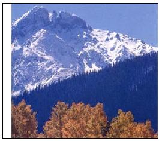 Branson Reynolds The Needle Range of the San Juan Mountains. |
Branson Reynolds Engine No. 481 returns from Silverton. |
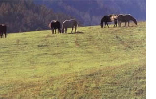 Branson Reynolds Roadside scenery between Bayfield and Durango. |
|
Branson Reynolds The Southern Ute Bear Dance is a popular local event. |
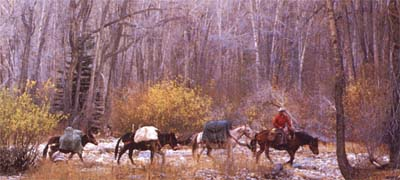 Branson Reynolds Guide Joe Herara leads a party of elk hunters into the La Plata Mountains. |
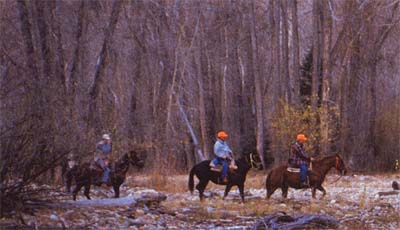 Branson Reynolds Bill Fletcher at the La Plata County Draft Horse School. |
|
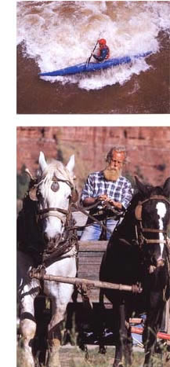 Branson Reynolds Bill Fletcher at the La Plata County Draft Horse School. |
Branson Reynolds Left: Off-road bicyclists at Durango's Iron Horse Bicycle Classic. Right:Rafters offer tourists a wild ride on the Animas River. |
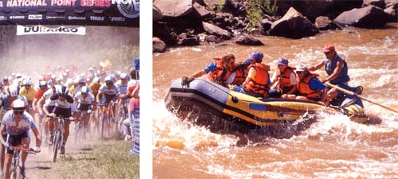 Branson Reynolds LEFT: Artist Stanton Englehart: "I see virtually no concern for aesthetics anywhere." |
|
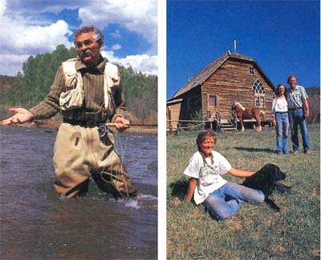 Branson Reynolds Mayor Lynn Shine: "Prospective immigrants should . . . find out if we meet their lifestyle needs, then look for a job, and only then decide . . . to move here." |
Branson Reynolds Hot-air balloons descend during Durango's "Snowdown" winter festival. |
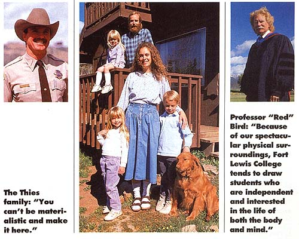 Branson Reynolds |
|
Branson Reynolds |
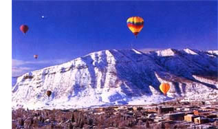 Branson Reynolds |
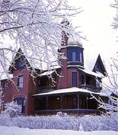 |
|
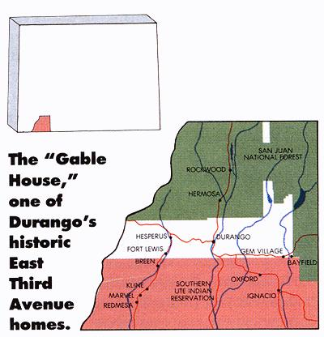 |
|
|